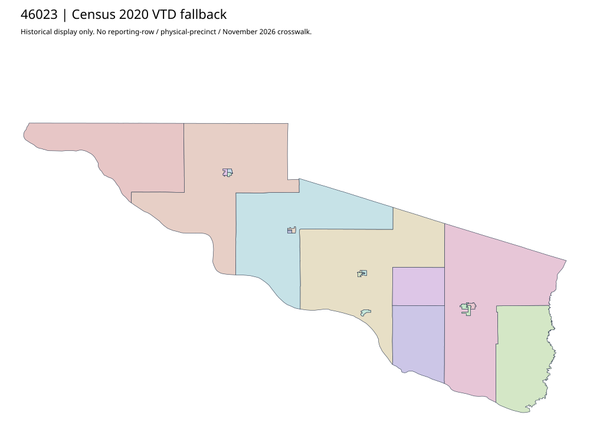

304 ordered indexCharles Mix | 46023
Official auditor links acquired complete2012 voting precinct/polling-place map and separate2026 vote-center PDF. GIS landing and client were also inspected. Historical map12 labels and present vote-center addresses do not supply a native-row or current physical crosswalk.
3 priority / 13 full historical observations. Parent is a summary ancestor, not additive to leaves. No physical feature matches or current reporting crosswalk approved.
Acquired shared-parent assets
map-46023-007-network | complete1-page PDF; all-page contact sheet; complete page1; complete original gzip. Exact reconstruction: python -B scripts/reconstruct.py --id map-46023-007-network /private/tmp/map.pdf
Administrative/district supplement (not a precinct polygon match): map-46023-006-network
Census2020 fallback
21 native historical VTD features. Entire785-feature ZIP original retained once, all66 counties. Yankton has one countywide VTD. No current/reporting allocation. complete original gzip

Full binary/attribute/geometry QA
Observed authority/acquisition routes
Complete SOS authority fields including original blank/masked values: parent inventory. No contacts were sent.
Ordered full children
- Precinct-11 | 691 source votes | priority
- Precinct-03 | 514 source votes | priority
- Precinct-01 | 481 source votes | priority
- Precinct-09 | 410 source votes | remainder
- Precinct-05 | 354 source votes | remainder
- Precinct-06 | 197 source votes | remainder
- Precinct-02 | 192 source votes | remainder
- Precinct-08 | 187 source votes | remainder
- Precinct-04 | 152 source votes | remainder
- Precinct-10 | 131 source votes | remainder
- Precinct-07 | 127 source votes | remainder
- Precinct-12 | 99 source votes | remainder
- Precinct-13 | 74 source votes | remainder